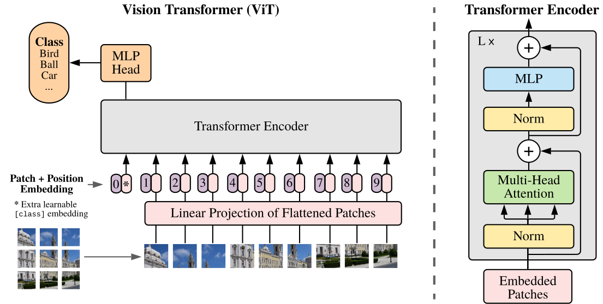
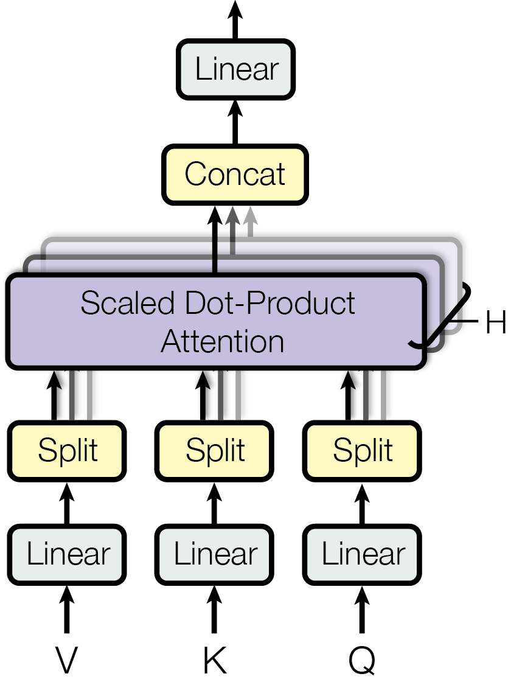
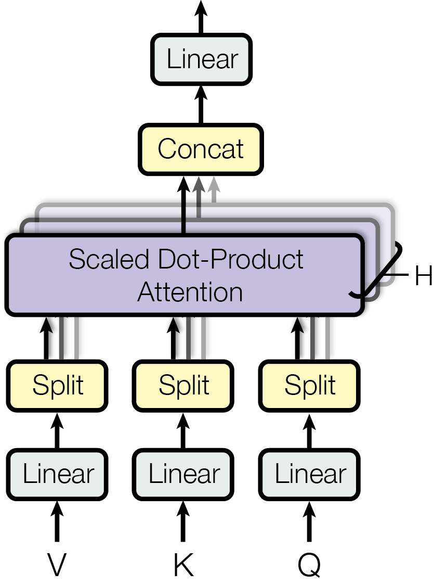

ViT解读
Contents
ViT解读#
[ViT] An Image is Worth 16x16 Words: Transformers for Image Recognition at Scale.
Alexey Dosovitskiy, Lucas Beyer, Alexander Kolesnikov, Dirk Weissenborn, Xiaohua Zhai, Thomas Unterthiner, Mostafa Dehghani, Matthias Minderer, Georg Heigold, Sylvain Gelly, Jakob Uszkoreit, Neil Houlsby.
ICLR 2021.
[paper] [code]
解读者：牛志康，西安电子科技大学本科生，Datawhale成员；小饭同学，香港城市大学研究生
前言#
Transformer 已经成为自然语言处理任务的一种基础网络，但它在计算机视觉中的应用仍然有限。因为 Transformer 对序列进行建模，如果我们将图像种的每一个像素都作为序列中的元素，因为序列的大小与图片的大小呈平方关系，将导致计算量大大增加。现有的工作要么是将注意力与卷积网络结合使用，要么用注意力机制替换 CNN 的某些组件或者降低图片的序列长度。这些改进都是基于 convolutional neural network (CNN) 卷积神经网络构建的，于是人们就在希望有一种完全基于 Transformer 的骨干网络，可以拥有 Transformer 全局建模的特性也可以不过多修改原始 Transformer 的结构。基于这种 motivation，才出现了 Vision Transformer (ViT) 这篇优秀的工作。
本文将从原理和代码实现上进行讲解，结合本课程需求，我们将着重讲解代码的实现，论文中更多的细节还请各位同学详细阅读原论文或关注 Whalepaper 后续的论文精读。
ViT 的整体流程#
如下图所示，ViT 的主要思想是将图片分成一个一个的小 patch，将每一个 patch 作为序列的元素输入 Transformer 中进行计算。

其具体流程如下：
切分和映射：对一张标准图像，我们首先将图片切分成一个一个小的
patch，然后将它们的维度拉平Flatten为一维的向量，最后我们将这些向量通过线性映射Linear Project\(\mathbf{E}\) 到维度为 \(D\) 的空间。分类表征和位置信息：分类表征：为了实现图像分类，我们在得到的向量中需要加入一个
classs token\(\mathbf{x}_\text{class}\) 作为分类表征（如上图中标注 \(*\)的粉色向量所示）。位置信息：图像和文本一样也需要注意顺序问题，因此作者通过Position Embedding\(\mathbf{E}_{pos}\) 加入位置编码信息（如上图中标注 \(0-9\) 的紫色向量所示）。Transformer Encoder：然后我们将经过上面操作的
token送入Transformer Encoder。这里的Transformer Encoder和Transformer (Attention is All You Need)文章中实现基本一致，主要是通过多头注意力机制，对patch之间进行全局的信息提取。输出与分类：对于分类任务，我们只需要获得
class token经过Transformer Encoder得到的输出，加一个MLP Head进行分类学习。
我们论文代码的讲解也将按照上面的流程，对重要模块进行讲解，我们所展示的ViT代码示例来源于rwightman/timm并进行了部分简化，在此感谢每一位开源贡献者所作出的贡献。
切分和映射 Patch Embedding + Linear Projection#
对一张标准图像 \(\mathbf{x}\)，其分辨率为 \(H \times W \times C\)。为了方便讨论，我们取 ViT 的标准输入 \(H \times W \times C = 224 \times 224 \times 3\) 进行一些具体维度的讲解。通过切分操作，我们将整个图片分成多个 patch \(\mathbf{x}_p\)，其大小为 $\(P \times P \times C = 16 \times 16 \times 3 = 768。\)\( 这样，一共可以得到 `Patch` 的数量为 \)\(N={(H \times W)}/{(P \times P)} = {(224 \times 224)}/{(16 \times 16)} = {(224 / 16)}\times {(224 / 16)} = 14 \times 14 = 196。\)\( 所以，我们将一张 \)224 \times 224 \times 3\( 的标准图片， 通过转换得到了 \)196\( 个 `patch`，每个 `patch` 的维度是 \)768$。
对得到的 patch 通过 \(\mathbf{E} \in {\mathbb{R}^{768 \times D}}\) 进行线性映射到维度 \(D\)，我们将映射后的 patch 叫做 token，以便于和原本 Transformer 的术语进行统一（代码中默认的 \(D\) 仍然为 \(768\)。我们认为，为了不损失信息，这里 \(D\) 满足大于等于 \(768\) 即可）。对应文中公式，上述操作可以表示为：
$\(
\begin{align}
[\mathbf{x}_p^1\mathbf{E}; \mathbf{x}_p^2\mathbf{E}; \cdots; \mathbf{x}_p^N\mathbf{E}], \quad \mathbf{E}\in\mathbb{R}^{(P^2\cdot C)\times D}。
\end{align}
\)$
以上是按照原论文对切分和映射的讲解，在实际的代码实现过程中，切分和映射实际上是通过一个二维卷积 nn.Conv2d() 一步完成的。为了实现一步操作，作者将卷积核的大小 kernal_size 直接设置为了 patch_size，即 \(P=16\)。然后，将卷积核的步长 stride 也设置为了同样的 patch_size，这样就实现了不重复的切割图片。而卷积的特征输入和输出维度，分别设为了 \(C=3\) 和 \(D=768\)，对应下方代码的 in_c 和 embed_dim。
self.proj = nn.Conv2d(in_c, embed_dim, kernel_size=patch_size, stride=patch_size)
一张 \(1 \times 3 \times 224 \times 224\) 的图像（其中 \(1\) 是 batch_size 的维度），经过上述卷积操作得到 \(1 \times 768 \times 14 \times 14\) 的张量。（代码中将 \(14 \times 14 = 196\) 当作 grid 的个数，即 grid_size=(14, 14)）然后，对其进行拉平 flatten(2) 得到 \(1 \times 768 \times 196\) 的张量。因为 Transformer 需要将序列维度调整到前面，我们再通过 transpose(1, 2) 调整特征和序列维度，最终得到的张量大小为 \(1 \times 196 \times 768\)。切分、映射、拉平和维度调整统统经过下面一步操作得到：
x = self.proj(x).flatten(2).transpose(1, 2)
在代码中，这些操作全部被写在名为 PatchEmbed 的模块中，其具体的实现如下所示：
class PatchEmbed(nn.Module):
"""
Image --> Patch Embedding --> Linear Proj --> Pos Embedding
Image size -> [224,224,3]
Patch size -> 16*16
Patch num -> (224^2)/(16^2)=196
Patch dim -> 16*16*3 =768
Patch Embedding: [224,224,3] -> [196,768]
Linear Proj: [196,768] -> [196,768]
Positional Embedding: [197,768] -> [196,768]
"""
def __init__(self, img_size=224, patch_size=16, in_c=3, embed_dim=768, norm_layer=None):
"""
Args:
img_size: 默认参数224
patch_size: 默认参数是16
in_c: 输入的通道数
embed_dim: 16*16*3 = 768
norm_layer: 是否使用norm层，默认为否
"""
super().__init__()
img_size = (img_size, img_size) # -> img_size = (224,224)
patch_size = (patch_size, patch_size) # -> patch_size = (16,16)
self.img_size = img_size # -> (224,224)
self.patch_size = patch_size # -> (16,16)
self.grid_size = (img_size[0] // patch_size[0], img_size[1] // patch_size[1]) # -> grid_size = (14,14)
self.num_patches = self.grid_size[0] * self.grid_size[1] # -> num_patches = 196
# Patch+linear proj的这个操作 [224,224,3] --> [14,14,768]
self.proj = nn.Conv2d(in_c, embed_dim, kernel_size=patch_size, stride=patch_size)
# 判断是否有norm_layer层，要是没有不改变输入
self.norm = norm_layer(embed_dim) if norm_layer else nn.Identity()
def forward(self, x):
# 计算各个维度的大小
B, C, H, W = x.shape
assert H == self.img_size[0] and W == self.img_size[1], \
f"Input image size ({H}*{W}) doesn't match model ({self.img_size[0]}*{self.img_size[1]})."
# flatten: [B, C, H, W] -> [B, C, HW], flatten(2)代表的是从2位置开始展开
# eg: [1,3,224,224] --> [1,768,14,14] -flatten->[1,768,196]
# transpose: [B, C, HW] -> [B, HW, C]
# eg: [1,768,196] -transpose-> [1,196,768]
x = self.proj(x).flatten(2).transpose(1, 2)
x = self.norm(x)
return x
**在默认情况下，这一步是不进行 layer_norm 操作的，即它被设置为 nn.Identity()。对于 layer_norm，我们会在下面进行详细的讲解。
分类表征和位置信息 Class Token + Postional Embedding#
如下图所示，左侧灰色部分为加入分类表征，中间紫色部分为加入位置信息。

分类表征：Class Token
为了实现图像分类，我们在切分和映射后的向量 \([\mathbf{x}_p^1\mathbf{E}; \mathbf{x}_p^2\mathbf{E}; \cdots; \mathbf{x}_p^N\mathbf{E}]\) 中加入一个 class token \(\mathbf{x}_\text{class} \in \mathbb{R}^{D}\) 作为分类表征（如上图中最左侧深灰色框所示）。将这个表征放置在序列的第一个位置上，我们就得到一个维度为 \((196+1) \times 768\) 的新张量：
$\(
\begin{align}
[\mathbf{x}_{\text{class}}; \mathbf{x}_p^1\mathbf{E}; \mathbf{x}_p^2\mathbf{E}; \cdots; \mathbf{x}_p^N\mathbf{E}]
\end{align}
\)$
对于具体的代码实现，我们通过 nn.Parameter(torch.zeros(1, 1, 768)) 实例化一个可学习的 cls_token，然后将这个 cls_token 按照 batch_size = x.shape[0] 进行复制，最后将其和之前经过切分和映射的 x 并在一起 torch.cat((cls_token, x), dim=1)。其完整代码，如下所示：
cls_token = nn.Parameter(torch.zeros(1, 1, 768)) # -> cls token
nn.init.trunc_normal_(self.cls_token, std=0.02) # 初始化
cls_token = cls_token.expand(x.shape[0], -1, -1) # (1,1,768) -> (128,1,768)
x = torch.cat((cls_token, x), dim=1) # [128, 197, 768]
**其实也可以不加入这个 cls token，我们可以对输出 token 做 GAP(Global Average Pooling)，然后对 GAP 的结果进行分类。
位置信息：Postional Embedding
图像和文本一样也需要注意顺序问题，因此作者通过 Position Embedding \(\mathbf{E}_{\text{pos}}\in\mathbb{R}^{(N + 1)\times D}\) 加入位置编码信息。这个 Position Embedding 和上面得到的分类表征张量，直接相加：
$\(
\begin{align}
\mathbf{z}_0 &= [\mathbf{x}_{\text{class}}; \mathbf{x}_p^1\mathbf{E}; \mathbf{x}_p^2\mathbf{E}; \cdots; \mathbf{x}_p^N\mathbf{E};] + \mathbf{E}_{\text{pos}}, & \mathbf{E}&\in\mathbb{R}^{(P^2\cdot C)\times D}, \mathbf{E}_{\text{pos}}\in\mathbb{R}^{(N + 1)\times D}
\end{align}
\)$
与 Transformer 使用余弦位置编码不同的是，ViT 通过nn.Parameter()实现了一个可以学习的位置编码。
num_patches = 196
pos_embed = nn.Parameter(torch.zeros(1, num_patches + 1, 768))
x = x + pos_embed
**这里 pos_embed 在 batch_size 的维度进行了 boardcast，所以所有的样本都是同样的 pos_embed。
Transformer Encoder#
下一步，我们只需要将序列 \(\mathbf{z}_0\) 输入 Transformer Encoder 即可。如下图所示，每个 Transformer Encoder 由 Multi-head Attention、MLP、Norm (Layer Norm,LN) 并外加 shortcut 连接实现。 $\( \begin{align} \mathbf{z}'_l &= \text{MSA}(\text{LN}(\mathbf{z}_{l-1})) + \mathbf{z}_{l-1}, & l &=1\dots L, \\ \mathbf{z}_l &= \text{MLP}(\text{LN}(\mathbf{z}'_l)) + \mathbf{z}'_l, & l &=1\dots L, \\ \mathbf{y} &= \text{LN}(\mathbf{z}_L^0) \end{align} \)$
Multi-head Attention#
Multi-head Attention 或者叫做 Multi-head Self-Attention (MSA) 是由多个 Self-attention (SA) 模块组成，它们的框图可由下面所示，其中左侧为 SA，右侧为 MSA。
 ·
·
·
·
·
·

·
·
·
·
·
·

对于一个标准的 SA 模块，我们通过对输入张量 \(\mathbf{z}\) 进行一个映射 \(\mathbf{W_{SA}}\) 得到 \(Q, K, V\)
$\(
[Q, K, V] = \mathbf{z} \mathbf{W}_{\text{SA}}.
\)\(
对于 MSA，我们需要对其输入再次进行切分为 \)k\( 个部分 （\)k=\(``self.num_heads``），而每个部分的维度为原本维度的 \)k$ 分之一，即 C // self.num_heads。然后，将维度进行调整，即 q, k, v 到第 1 个维度， 批大小 batch_size 为第 2 个维度，头的数量数量 num_heads 为第 3 个维度，切分块的数量 num_patches 和每个头的特征维度 embed_dim_per_head 为最后两个维度。这种维度调整，将方便提取 q, k, v，以及后面的注意力计算。上述步骤在代码中对应：
self.qkv = nn.Linear(dim, dim * 3, bias=qkv_bias)
qkv = self.qkv(x).reshape(B, N, 3, self.num_heads, C // self.num_heads).permute(2, 0, 3, 1, 4)
q, k, v = qkv[0], qkv[1], qkv[2] # seperate q, k, v
现在，如果我们将每一个 head，看作一个独立的计算单元。我们可以对每一个head 进行标准的 SA 计算
$\(
Attention(Q, K, V) = softmax(\frac{Q K^T}{\sqrt {D_k}}) \cdot V
\)\(
然后，这些 ``head`` 会被拼接在一起，计算最终的输出：
\)\(
\mathrm{MultiHead}(Q, K, V) = \mathrm{Concat}(\mathrm{head_1}, ...,
\mathrm{head_h})W^O \\
\text{where}~\mathrm{head_i} = \mathrm{Attention}(QW^Q_i, KW^K_i, VW^V_i)
\)$
其中 \(W^O\) 代表的是线性变换层，\(head_i\) 代表的是每个 head 的输出，其中 \(W^Q_i\)，\(W^K_i\), \(W^V_i\)，等价于每个 head 的线性映射权重（如上面计算 qkv所讲，实际代码实现中，我们会先一起计算 qkv，再进行 head 的切分）。如果按照默认实现，一般切分为 \(k=8\) 个头，其中 \(D_k=D/k = 768/8=96\)，是为了归一化点乘的结果。
在代码实现的时候，作者充分考虑了多头的并行计算。通过点乘的形式对所有的 head 一起计算相关性 (q @ k.transpose(-2, -1))，然后经过 softmax 得到权重 attn （这些权重的维度为 [batch_size, num_heads, num_patches + 1, num_patches + 1]）。
之后将这些权重 attn 和 v （其维度为 [batch_size, num_heads, num_patches+1, embed_dim_per_head]） 进行点乘，得到注意力的输出结果。这里在点乘的时候，我们只需要看 attn 和 v的最后两个维度，分别为[num_patches + 1, num_patches + 1] 和 [num_patches+1, embed_dim_per_head]，维持其他维度不变，我们可以得到输出的结果维度为 [batch_size, num_heads, num_patches + 1, embed_dim_per_head]。
最后，我们通过将特征维度和多头维度交换 transpose(1, 2) 和 重组第2个及后面所有的维度 reshape(B, N, C)，就可以得到维度为 [batch_size, num_patches + 1, total_embed_dim] 和上面公式相同的并行多头计算结果。其完整实现如下所示
class Attention(nn.Module):
def __init__(self,
dim, # 输入token的dim
num_heads=8, # attention head的个数
qkv_bias=False, # 是否使用qkv bias
qk_scale=None,
attn_drop_ratio=0.,
proj_drop_ratio=0.):
super(Attention, self).__init__()
self.num_heads = num_heads
# 计算每一个head处理的维度head_dim = dim // num_heads --> 768/8 = 96
head_dim = dim // num_heads
self.scale = qk_scale or head_dim ** -0.5 # 根下dk操作
# 使用nn.Linear生成w_q,w_k,w_v，因为本质上每一个变换矩阵都是线性变换，
self.qkv = nn.Linear(dim, dim * 3, bias=qkv_bias)
self.attn_drop = nn.Dropout(attn_drop_ratio)
self.proj = nn.Linear(dim, dim)
self.proj_drop = nn.Dropout(proj_drop_ratio)
def forward(self, x):
# [batch_size, num_patches + 1, total_embed_dim]
# total_embed_dim不是一开始展开的那个维度，是经过了一个线性变换层得到的
B, N, C = x.shape
# [batch_size, num_patches+1, total_embed_dim] -qkv()-> [batch_size, num_patches + 1, 3 * total_embed_dim]
# reshape: -> [batch_size, num_patches + 1, 3, num_heads, embed_dim_per_head]
# permute: -> [3, batch_size, num_heads, num_patches + 1, embed_dim_per_head]
qkv = self.qkv(x).reshape(B, N, 3, self.num_heads, C // self.num_heads).permute(2, 0, 3, 1, 4)
# q,k,v = [batch_size, num_heads, num_patches + 1, embed_dim_per_head]
q, k, v = qkv[0], qkv[1], qkv[2] # make torchscript happy (cannot use tensor as tuple)
# transpose(-2,-1)在最后两个维度进行操作，输入的形状[batch_size,num_heads,num_patches+1,embed_dim_per_head]
# transpose: -> [batch_size, num_heads, embed_dim_per_head, num_patches + 1]
# @: multiply -> [batch_size, num_heads, num_patches + 1, num_patches + 1]
attn = (q @ k.transpose(-2, -1)) * self.scale
attn = attn.softmax(dim=-1)
attn = self.attn_drop(attn)
# @: multiply -> [batch_size, num_heads, num_patches + 1, embed_dim_per_head]
# transpose: -> [batch_size, num_patches + 1, num_heads, embed_dim_per_head]
# reshape: -> [batch_size, num_patches + 1, total_embed_dim]
x = (attn @ v).transpose(1, 2).reshape(B, N, C)
x = self.proj(x)
x = self.proj_drop(x)
return x
MLP#
MLP层类似于原始Transformer中的Feed Forward Network。
In ViT, only MLP layers are local and translationally equivariant, while the self-attention layers are global.
为了理解这句话，即 MLP 只对局部信息进行操作，我们需要强调 nn.Linear() 操作只对输入张量的最后一个维度进行操作。那么，对于输入维度为 [batch_size, num_patches + 1, total_embed_dim]，学习到的线性层对于所有 patch 都是一样的。所以，它是一个局部信息的建模。对于 Attention，因为它是在不同的 patch 层面或者不同的序列层面进行建模，所以是全局信息建模。因此，作者使用了 MLP 和 Attention 一起进行局部和全局信息的提取。
class Mlp(nn.Module):
"""
in_features --> hidden_features --> out_features
论文实现时：in_features.shape = out_features.shape
"""
def __init__(self, in_features, hidden_features=None, out_features=None, act_layer=nn.GELU, drop=0.):
super().__init__()
# 用or实现了或操作，当hidden_features/out_features为默认值None时
# 此时out_features/hidden_features=None or in_features = in_features
# 当对out_features或hidden_features进行输入时，or操作将会默认选择or前面的
# 此时out_features/hidden_features = out_features/hidden_features
out_features = out_features or in_features
hidden_features = hidden_features or in_features
self.fc1 = nn.Linear(in_features, hidden_features)
self.act = act_layer()
self.fc2 = nn.Linear(hidden_features, out_features)
self.drop = nn.Dropout(drop)
def forward(self, x):
# in_features --> hidden_features --> out_features
x = self.fc1(x)
x = self.act(x)
x = self.drop(x)
x = self.fc2(x)
x = self.drop(x)
return x
Layer Norm#
Normalization 有很多种，但是它们都有一个共同的目的，那就是把输入转化成均值为 0 方差为 1 的数据（或者某个学习到的均值和方差）。我们在把数据送入激活函数之前进行 Normalization（归一化），因为我们不希望输入数据落在激活函数的饱和区。
Batch Norm 的作用是在对这批样本的同一维度特征做归一化，而 Layer Norm 的作用是对单个样本的所有维度特征做归一化。举一个简单的例子，对于通过编码的句子“我爱学习”，Batch Norm 是对这四个字进行归一化，而 Layer Norm 是对每个字本身的特征进行归一化。
对于 Layer Norm，其公式如下所示
$\(L N\left(x_i\right)=\alpha \times \frac{x_i-u_L}{\sqrt{\sigma_L^2+\epsilon}}+\beta\)$
可以通过 nn.LayerNorm 进行实现。
Transformer Encoder 完整代码#
整合上面 Multi-head Attention、MLP、Norm (Layer Norm,LN) 并外加 shortcut 连接代码，我们可以得到 Transformer Encoder 的完整代码。
class Block(nn.Module):
"""
每一个Encoder Block的构成
每个Encode Block的流程：norm1 --> Multi-Head Attention --> norm2 --> MLP
"""
def __init__(self,
dim, # 输入mlp的维度
num_heads, # Multi-Head-Attention的头个数
mlp_ratio=4., # hidden_features / in_features = mlp_ratio
qkv_bias=False, # q,k,v的生成是否使用bias
qk_scale=None,
drop_ratio=0., # dropout的比例
attn_drop_ratio=0., # 注意力dropout的比例
drop_path_ratio=0.,
act_layer=nn.GELU, # 激活函数默认使用GELU
norm_layer=nn.LayerNorm): # Norm默认使用LayerNorm
super(Block, self).__init__()
# 第一层normalization
self.norm1 = norm_layer(dim)
# self.attention层的实现
self.attn = Attention(dim, num_heads=num_heads, qkv_bias=qkv_bias, qk_scale=qk_scale,attn_drop_ratio=attn_drop_ratio, proj_drop_ratio=drop_ratio)
self.drop_path = DropPath(drop_path_ratio) if drop_path_ratio > 0. else nn.Identity()
# 第二层normalization
self.norm2 = norm_layer(dim)
mlp_hidden_dim = int(dim * mlp_ratio) # hidden_dim = dim * mlp_ratio
# mlp实现
self.mlp = Mlp(in_features=dim, hidden_features=mlp_hidden_dim, act_layer=act_layer, drop=drop_ratio)
def forward(self, x):
# 实现了两个残差连接
x = x + self.drop_path(self.attn(self.norm1(x)))
x = x + self.drop_path(self.mlp(self.norm2(x)))
return x
ViT 完整代码#
对输入图像，进行切分和影射、加入分类表征和位置信息、经过 Transformer Encoder、然后添加一个分类头进行输出，我们就完成了 ViT 所有的代码。
完整的 ViT 主要模块流程，见下方 VisionTransformer。
class VisionTransformer(nn.Module):
def __init__(self,
img_size=224,
patch_size=16,
in_c=3,
num_classes=1000,
embed_dim=768,
depth=12,
num_heads=12,
mlp_ratio=4.0,
qkv_bias=True,
qk_scale=None,
representation_size=None,
distilled=False,
drop_ratio=0.,
attn_drop_ratio=0.,
drop_path_ratio=0.,
embed_layer=PatchEmbed,
norm_layer=None,
act_layer=None):
"""
Args:
img_size (int, tuple): input image size
patch_size (int, tuple): patch size
in_c (int): number of input channels
num_classes (int): number of classes for classification head
embed_dim (int): embedding dimension
depth (int): depth of transformer
num_heads (int): number of attention heads
mlp_ratio (int): ratio of mlp hidden dim to embedding dim
qkv_bias (bool): enable bias for qkv if True
qk_scale (float): override default qk scale of head_dim ** -0.5 if set
representation_size (Optional[int]): enable and set representation layer (pre-logits) to this value if set
distilled (bool): model includes a distillation token and head as in DeiT models
drop_ratio (float): dropout rate
attn_drop_ratio (float): attention dropout rate
drop_path_ratio (float): stochastic depth rate
embed_layer (nn.Module): patch embedding layer
norm_layer: (nn.Module): normalization layer
"""
super(VisionTransformer, self).__init__()
self.num_classes = num_classes
# 每个patch的图像维度 = embed_dim
self.num_features = self.embed_dim = embed_dim # num_features for consistency with other models
# token的个数为1
self.num_tokens = 2 if distilled else 1
# 设置激活函数和norm函数
norm_layer = norm_layer or partial(nn.LayerNorm, eps=1e-6)
act_layer = act_layer or nn.GELU
# 对应的将图片打成patch的操作
self.patch_embed = embed_layer(img_size=img_size, patch_size=patch_size, in_c=in_c, embed_dim=embed_dim)
num_patches = self.patch_embed.num_patches
# 设置分类的cls_token
self.cls_token = nn.Parameter(torch.zeros(1, 1, embed_dim))
# distilled 是Deit中的 这里为None
self.dist_token = nn.Parameter(torch.zeros(1, 1, embed_dim)) if distilled else None
# pos_embedding 为一个可以学习的参数
self.pos_embed = nn.Parameter(torch.zeros(1, num_patches + self.num_tokens, embed_dim))
self.pos_drop = nn.Dropout(p=drop_ratio)
dpr = [x.item() for x in torch.linspace(0, drop_path_ratio, depth)] # stochastic depth decay rule
# 使用nn.Sequential进行构建，ViT中深度为12
self.blocks = nn.Sequential(*[
Block(dim=embed_dim, num_heads=num_heads, mlp_ratio=mlp_ratio, qkv_bias=qkv_bias, qk_scale=qk_scale,
drop_ratio=drop_ratio, attn_drop_ratio=attn_drop_ratio, drop_path_ratio=dpr[i],
norm_layer=norm_layer, act_layer=act_layer)
for i in range(depth)
])
self.norm = norm_layer(embed_dim)
# Representation layer
if representation_size and not distilled:
self.has_logits = True
self.num_features = representation_size
self.pre_logits = nn.Sequential(OrderedDict([
("fc", nn.Linear(embed_dim, representation_size)),
("act", nn.Tanh())
]))
else:
self.has_logits = False
self.pre_logits = nn.Identity()
# Classifier head(s)
self.head = nn.Linear(self.num_features, num_classes) if num_classes > 0 else nn.Identity()
self.head_dist = None
if distilled:
self.head_dist = nn.Linear(self.embed_dim, self.num_classes) if num_classes > 0 else nn.Identity()
# Weight init
nn.init.trunc_normal_(self.pos_embed, std=0.02)
if self.dist_token is not None:
nn.init.trunc_normal_(self.dist_token, std=0.02)
nn.init.trunc_normal_(self.cls_token, std=0.02)
self.apply(_init_vit_weights)
def forward_features(self, x):
# [B, C, H, W] -> [B, num_patches, embed_dim]
x = self.patch_embed(x) # [B, 196, 768]
# [1, 1, 768] -> [B, 1, 768]
cls_token = self.cls_token.expand(x.shape[0], -1, -1)
if self.dist_token is None:
x = torch.cat((cls_token, x), dim=1) # [B, 197, 768]
else:
x = torch.cat((cls_token, self.dist_token.expand(x.shape[0], -1, -1), x), dim=1)
x = self.pos_drop(x + self.pos_embed)
x = self.blocks(x)
x = self.norm(x)
if self.dist_token is None:
return self.pre_logits(x[:, 0])
else:
return x[:, 0], x[:, 1]
def forward(self, x):
x = self.forward_features(x)
if self.head_dist is not None:
x, x_dist = self.head(x[0]), self.head_dist(x[1])
if self.training and not torch.jit.is_scripting():
# during inference, return the average of both classifier predictions
return x, x_dist
else:
return (x + x_dist) / 2
else:
x = self.head(x)
return x
def _init_vit_weights(m):
"""
ViT weight initialization
:param m: module
"""
if isinstance(m, nn.Linear):
nn.init.trunc_normal_(m.weight, std=.01)
if m.bias is not None:
nn.init.zeros_(m.bias)
elif isinstance(m, nn.Conv2d):
nn.init.kaiming_normal_(m.weight, mode="fan_out")
if m.bias is not None:
nn.init.zeros_(m.bias)
elif isinstance(m, nn.LayerNorm):
nn.init.zeros_(m.bias)
nn.init.ones_(m.weight)
参考：
An Image is Worth 16x16 Words: Transformers for Image Recognition at Scale https://arxiv.org/pdf/2010.11929.pdf Attention Is All You Need https://arxiv.org/abs/1706.03762